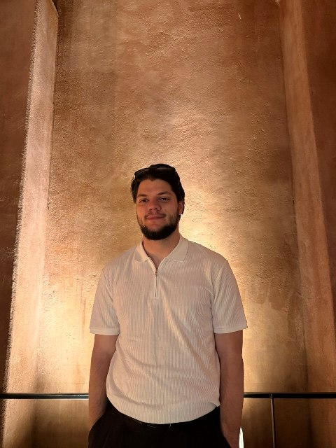

Павел Прокудин Pavel Prokudin
писатель
writer
Смешные истории о людях и их характерах.
Funny stories about people and their characters.
Читать Read
Обо мне
About
Привет! Я — Павел Прокудин, писатель из маленького города. Пишу я примерно сколько себя помню. Шутка ли — первую мою книгу мы с мамой напечатали на принтере, когда мне было 7 лет!
С тех пор, конечно, многое изменилось. Я писал стихи, потом их бросал. Начинал прозу, и опять бросал. Поступил на строительство дорог, но и тут бросил! Но чтобы наконец понять, чего я хочу… В итоге я закончил магистратуру по Филологии, и всякие разные дополнительные курсы, включая Band, МГЛУ и Издательскую программу от Таврида.АРТ.
В 2026 году впервые опубликовался в журнале “Юность” – для меня это целое событие!
Но на этом я останавливаться не собираюсь. Спасибо, что заглянул, и добро пожаловать в раздел “Что почитать?”. ↓
Hi! I'm Pavel Prokudin, a writer from a small town. I've been writing for as long as I can remember. Believe it or not, my first book was printed on a printer with my mom when I was just 7 years old!
Of course, a lot has changed since then. I wrote poetry, then gave it up. Started prose, then gave it up again. Enrolled in road construction, but quit that too! Just to finally figure out what I really wanted… In the end, I completed a master's degree in Philology and a variety of courses, including Band, MSLU, and the Tavrida.ART Publishing Program.
In 2026, I was published for the first time in the literary magazine "Yunost" — a huge milestone for me!
But I'm not planning to stop here. Thank you for stopping by, and welcome to the "What to Read?" section. ↓
Что почитать?
What to read?
Дело Труба
Рассказ
Short story
Жилищно-коммунальная комедия
A housing-and-utilities comedy
Абсурдное событие, которое приводит к реальным последствиям
An absurd event that leads to real consequences
Журнал «Юность», 2026
"Yunost" magazine, 2026
Первого октября между девятиэтажными братьями-домами по улице Пионерской образовался провал.
Братья-дома эти появились тут еще в семидесятых и славились тем, что в них установили первые в городке лифты. Местные комсомольцы и пионеры специально доезжали до южной конечной остановки, чтобы покататься на беззащитных достижениях науки и техники. От такой нагрузки лифты потребовали скорейшего ремонта.
Как понравиться вашему официанту
How to Win Over Your Waiter
Роман
Novel
Комедия в общепите
A catering comedy
Главный герой хочет дом на колесах, но понимает, что дом — там, где тебя ждут
The protagonist wants a home on wheels, but realizes that home is where you are expected
Ищет издателя
Seeking publisher
В школе все события обходили меня стороной. Разве что тот поход. Да и он неудачный. Ещё бы! Пятый класс, апрель, тепло, но не настолько, чтобы вода в реке успела нагреться. Нас катали на тарзанке. “Чтоб без прыжков”, — сказал чей-то папа. Вжух до середины реки и обратно. И так по очереди. На моей очереди тарзанка предательски промокла и оказалась скользкой. До середины реки я добрался уже на одной руке, декантация (это когда отделяют вино от осадка — узнал, пока гуглил все про официантов) второй стала вопросом времени. На развороте я прикинул свои шансы. Геометрию мы еще не проходили, да даже если бы и проходили — моя тройка вряд ли бы изменила картину мира. Разум пятиклассника просчитал, что добраться до финиша не представляется возможным, а контакт с водой выглядит неизбежным. Лучше нырнуть здесь, чем удариться ногами возле берега, подумал я, и вторая рука раскрылась, как бутончик тюльпана.
Обратная геодезическая задача
Рассказ
Short story
Производственная комедия
A workplace comedy
Главный герой среди абсурда на стройке понимает, что главная задача — найти свое место в жизни
Amidst the absurdity of a construction site, the protagonist realizes the main task is to find his place in life
Контргазета «НАЛЁТ», 2026
"NALET" newspaper, 2026
Поднять руку было единственно-правильным решением. Ну и что, что выбирали лучших? Я, может быть, тоже лучший, но в другом…
Расчет какой: если меня все-таки выберут, я попаду в группу с отличниками, и зачет по практике у меня в кармане. Точнее в зачетке, которая в кармане. А, не важно!
Русский авось сработал. Не знаю, каким образом, но наш куратор выбрал именно меня в компанию к отличникам Саше и Андрею. Веселить их наверное. Или остальных рабочих веселить: куратор сказал, что контора серьезная.
Корреспонденция
Correspondence
По вопросам публикации, перевода или сотрудничества пишите ↓
For publication, translation or collaboration write ↓